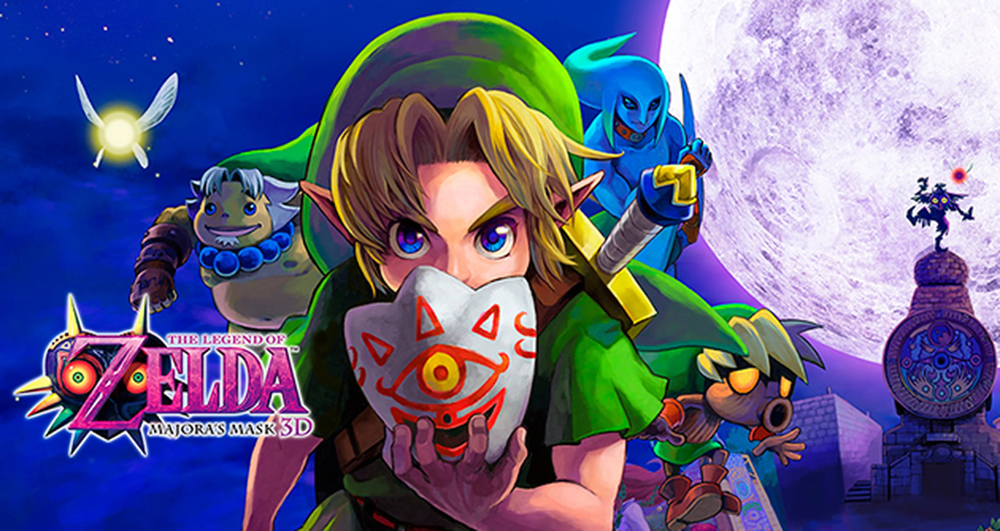
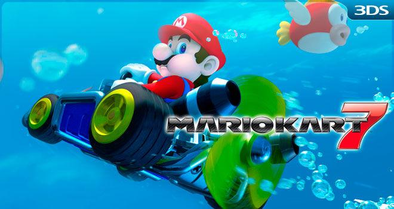

<section>
    <div class="container">
        <h1>Mis Hobbies Favoritos</h1>
        <p>
            Además del estudio, paso gran parte de mi tiempo libre disfrutando de actividades que me relajan y me
            inspiran.
            Los videojuegos y la música son parte esencial de mi día a día.
        </p>
        <article>
            <h2>Videojuegos</h2>
            <p>
                Me encantan los videojuegos de plataformas como Super Mario y los de aventura como The Legend of Zelda.
                Me gusta la sensación de exploración y los desafíos creativos que presentan.
            </p>
            <div>
                <p>
                    He tenido la suerte de poder jugar muchísimos títulos y a continuación presento una lista de mi top
                    3 junto a detalles del por qué están allí.
                </p>
                <ol type="I">
                    <li>
                        The Legend of Zelda Majora's Mask
                        <ol>
                            <li>
                                Remake para Nintendo 3DS
                                <ul type="square">
                                    <li>Llegó en un momento clave de cualquier persona, la adolescencia.</li>
                                    <li>Tiene una banda sonora increible.</li>
                                    <li>Fue el primer juego que completé al 100%.</li>
                                </ul>
                            </li>
                            <li>
                                Versión original N64
                                <ul type="disc">
                                    <li>Fue la razón por la que descubrí que mi Wii era retrocompatible con GCN.</li>
                                    <li>Es muy cómoda de jugar pero su remake es más disfrutable.</li>
                                    <li>Siempre es de los primeros juegos que instalo en cualquier consola.</li>
                                </ul>
                            </li>
                        </ol>
                    </li>
                    <li>
                        Mario kart 7
                        <ul type="circle">
                            <li>Fue la razón de empezar a ahorrar para comprar mi Nintendo 3DS.</li>
                            <li>Mis amigos vieron lo divertido que era el juego y ellos también se compraron una 3DS con
                                el MK7, los recreos fueron legendarios.</li>
                            <li>Mi primera experiencia con los videojuegos online.</li>
                        </ul>
                    </li>
                    <li>
                        New Super Mario Bros Wii
                        <ul type="square">
                            <li>Fue el juego de mi infancia, practicamente crecí con él.</li>
                            <li>Era siempre la primera opción cuando llegaba un amigo a la casa.</li>
                            <li>Gracias a que lo disfrutabamos en familia, fue el que definió mis gustos en videojuegos.
                            </li>
                        </ul>
                    </li>
                </ol>
            </div>

            <div id="carouselId" class="carousel slide" data-bs-ride="carousel">
                <ol class="carousel-indicators">
                    <li data-bs-target="#carouselId" data-bs-slide-to="0" class="active" aria-current="true"
                        aria-label="First slide"></li>
                    <li data-bs-target="#carouselId" data-bs-slide-to="1" aria-label="Second slide"></li>
                    <li data-bs-target="#carouselId" data-bs-slide-to="2" aria-label="Third slide"></li>
                </ol>
                <div class="carousel-inner textoCarrusel" role="listbox">
                    <div class="carousel-item active">
                        
                    </div>
                    <div class="carousel-item">
                        
                        <div class="carousel-caption d-none d-md-block">
                        </div>
                    </div>
                    <div class="carousel-item">
                        
                        <div class="carousel-caption d-none d-md-block">
                        </div>
                    </div>
                </div>
                <button class="carousel-control-prev" type="button" data-bs-target="#carouselId" data-bs-slide="prev">
                    <span class="carousel-control-prev-icon" aria-hidden="true"></span>
                    <span class="visually-hidden">Anterior</span>
                </button>
                <button class="carousel-control-next" type="button" data-bs-target="#carouselId" data-bs-slide="next">
                    <span class="carousel-control-next-icon" aria-hidden="true"></span>
                    <span class="visually-hidden">Siguiente</span>
                </button>
            </div>
        </article>

        <article>
            <h2>Música</h2>
            <p>
                En cuanto a música no podría decir que tengo un género o banda favorita,
                simplemente hay canciones que me llaman la atención y me gustan. Sin embargo, es parte
                fundamental de mi vida pues me ayuda a controlar mi estado de ánimo y darme fuerzas.
            </p>
            <p>
                A continución adjunto una canción que ha sido muy importante para mí en el transcurso de
                este semestre.
            </p>
            <figure>
                <audio src="../public/audio/Bruno Mars - Locked Out Of Heaven.mp3" controls></audio>
                <figcaption>Locked Out Of Heaven</figcaption>
            </figure>
            <p>
                Valga mencionar que no solo disfruto de escuchar música sino también de ver los videos
                musicales que acompañan a la canción pues siento que ayuda a comprender de mejor manera
                el mensaje a transmitir. Es por ello que adjunto un par de videos musicales interesantes:
            </p>
            <div class="video-grid">
                <figure>
                    <video src="../public/videos/Enya - Caribbean Blue (Official 4k Music Video).mp4" controls></video>
                    <figcaption>Caribbean Blue</figcaption>
                </figure>
                <figure>
                    <video
                        src="../public/videos/Taylor Swift - You Belong With Me (Taylors Version) (Music Video 4K).mp4"
                        controls></video>
                    <figcaption>You Belong with Me</figcaption>
                </figure>
            </div>
        </article>

        <p>
            A continuación, se muestra un resumen de mis hobbies favoritos sumado al aprender cosas nuevas, con la
            frecuencia
            con la que los realizo y cuánto me gustan en una escala del 1 al 5.
        </p>

        <table class="table table-bordered">
            <thead>
                <tr>
                    <th>Hobby</th>
                    <th>Frecuencia</th>
                    <th>Nivel de gusto (1–5)</th>
                </tr>
            </thead>
            <tbody>
                <tr>
                    <td>Videojuegos</td>
                    <td>Diario</td>
                    <td>5</td>
                </tr>
                <tr>
                    <td>Escuchar música</td>
                    <td>Diario</td>
                    <td>5</td>
                </tr>
                <tr>
                    <td>Aprender temas nuevos</td>
                    <td>Semanal</td>
                    <td>4</td>
                </tr>
            </tbody>
            <tfoot>
                <tr>
                    <td colspan="3" class="text-center">
                        Estos son mis hobbies favoritos, por ahora… ¡siempre creo nuevos gustos!
                    </td>
                </tr>
            </tfoot>

        </table>


        <div class="alert alert-primary d-flex align-items-center" role="alert">
            <svg xmlns="http://www.w3.org/2000/svg" width="24" height="24" fill="currentColor"
                class="bi bi-exclamation-triangle-fill flex-shrink-0 me-2" viewBox="0 0 16 16" role="img"
                aria-label="Warning:">
                <path
                    d="M8.982 1.566a1.13 1.13 0 0 0-1.96 0L.165 13.233c-.457.778.091 1.767.98 1.767h13.713c.889 0 1.438-.99.98-1.767L8.982 1.566zM8 5c.535 0 .954.462.9.995l-.35 3.507a.552.552 0 0 1-1.1 0L7.1 5.995A.905.905 0 0 1 8 5zm.002 6a1 1 0 1 1 0 2 1 1 0 0 1 0-2z" />
            </svg>
            <div>
                Nota: No soy autor de los archivos multimedia expuestos en esta sección, todos los derechos a quien
                corresponda.
            </div>
        </div>
</section>